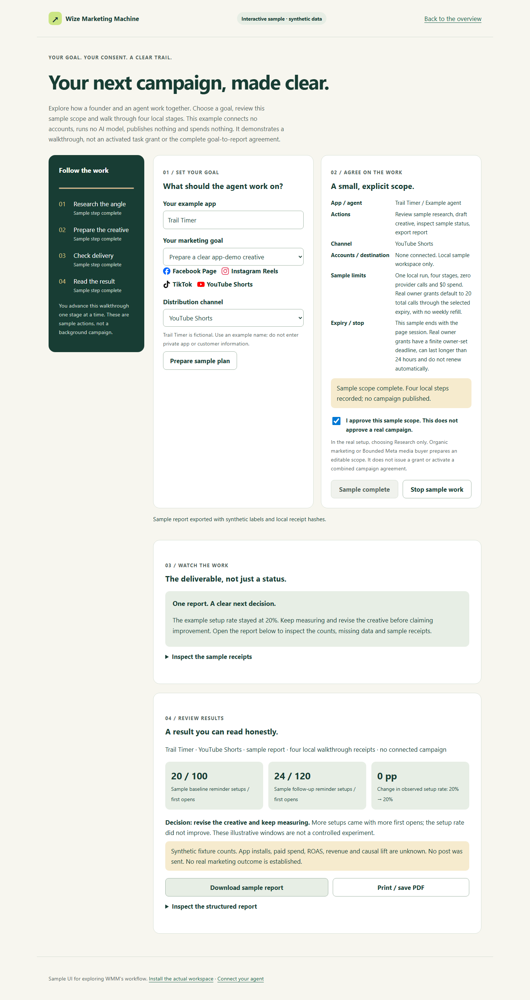
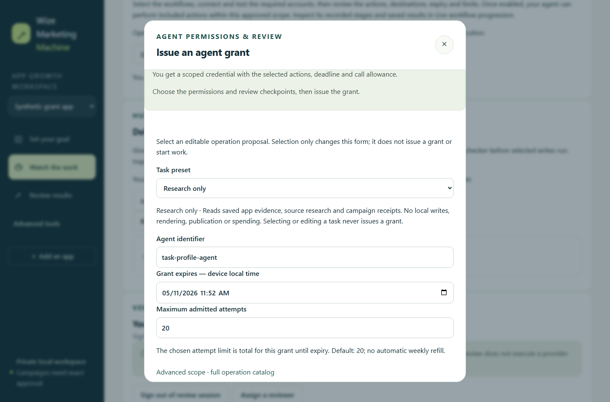
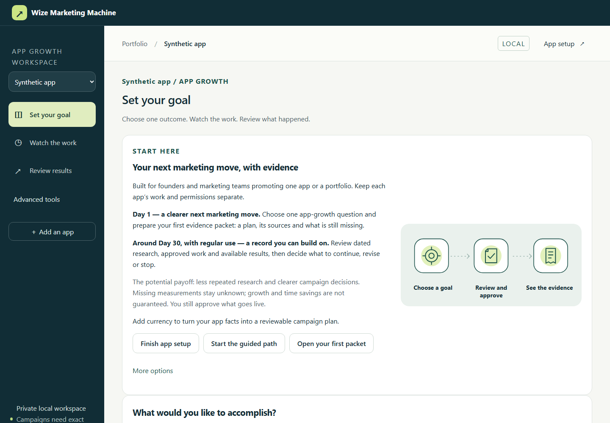
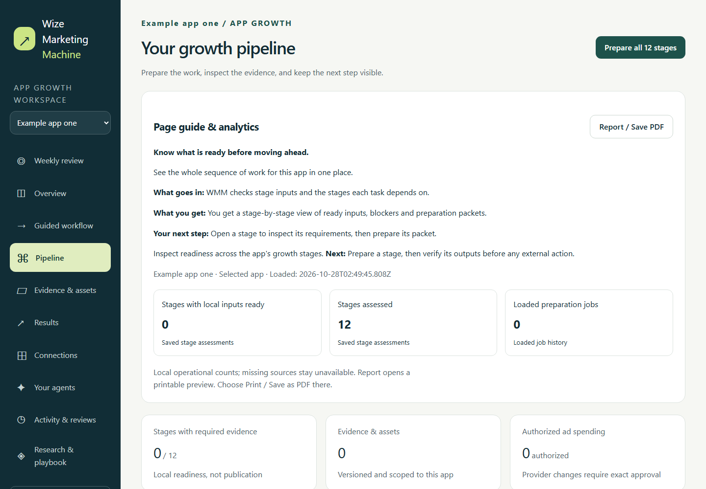
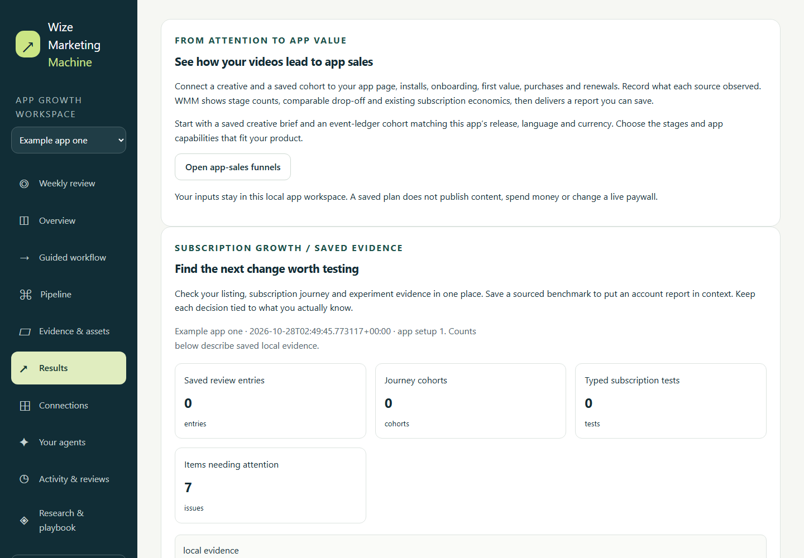

Start with what matters.
Describe the app, audience and change you want to test. Bring research, app proof, clips and supported account connections.
For founders and teams · operated with your agents
You built the app. Now give its marketing a place to move forward.
Choose a task, review the editable owner grant and see what your agent can do within it. WMM keeps supported work, source-labelled results and receipts together.
Try the sample workspaceNo sign-in for the sample. Fictional data, zero spending, no connected accounts.
Less coordination. More useful work.
Set the direction, shape an owner grant, follow the supported work and review its results.
Describe the app, audience and change you want to test. Bring research, app proof, clips and supported account connections.
Start with Research only, Organic marketing or Bounded Meta media buyer, or choose Custom. WMM prepares an editable operation list for your review before you issue the grant.
Within an active grant, your agent can research, prepare creative and carry out supported work. Review source reuse, exact content and destination; exceptions need your decision.
Open the files, inspect receipts and compare available measurements. Export a report and choose what to continue, revise or stop.
Owner approval, in clear terms
Organic marketing can prepare supported research, source/brief, Hypit/editor, publication and reporting operations. Source reuse, exact content and destination still need your approval. Bounded Meta media buyer covers supported Meta engagement work; each paid campaign needs separate exact account, content, targeting and budget approval.
A grant has its own expiry and revocation. Provider posts, account changes and charges already made keep separate status and recovery paths.
One workspace for the moving parts
App context, source snapshots, evidence cards, saved research and title/thumbnail ideas. Viral-only discovery requires 100,000 views and 10× a documented creator baseline. UGC has a separate intake path.
Copy packs, local or selected Drive media, UGC, trimming, ordering and stitching. Hypit guided production, preflight and verified-render reuse; richer projects use the editor and Studio.
Facebook Page posts and supported Meta engagement campaigns, each with exact owner scope, reviewed content and rights, limits, scheduling, retained IDs and reconciliation. Other networks do not gain publishing support by connecting OAuth.
Supported Apple, Google Play, PostHog, Clarity and RevenueCat paths plus imports. Reports retain dates, definitions, denominators and missing data; missing source data is not evidence of growth.
ASO, ASA and AEO worksheets, store checks, funnels, paywall and subscription experiments, cohorts and tracking plans. App Store promotional text follows a separate maker/checker approval path.
Personal-agent CLI/MCP, scoped grants, durable jobs, visible progress and owner reports. Profiles cover Grok Bot, Instinct, Hark Pro, Meta Muse, Codex/Dots, Claude Duet and generic agent teams.
Current product: local workspaces with supported automation and partial analytics coverage. Shared cloud team dashboards, broader campaign publishing and complete KPI coverage are in development. Inspect the capability map.
Try it before setting anything up
Step into a fictional app workspace. Choose a goal, review a sample consent summary, follow four local walkthrough stages and open the report. The sample connects no account and does not activate real task grants.
Local-only demonstration with synthetic data, not a connected campaign or growth result.

Open the interactive sample workspace →Choose a starting point and shape the scope to fit your work.

Real application screens with synthetic example data.



The outcome to work toward
Use WMM to reduce repeated research, shorten creative cycles and make informed decisions about installs, activation, conversion and retention. Receipts prove operations; connected measurements show what changed. The dogfooding trial has not yet established growth or time savings.
Windows and Ubuntu preview installers include the runtime. Desktop protected credentials use Windows Credential Manager or configured Linux Secret Service; the macOS adapter is unsupported. Native iPhone/iPad acceptance is separate. Keep the desktop server private on loopback; choose an explicitly configured owner-managed host for always-on operation.
Personal and internal business use is free under the repository license. Optional providers have their own costs. Resale, hosting and paid client services require a commercial agreement. Accounts stay private; default ad spending is zero.